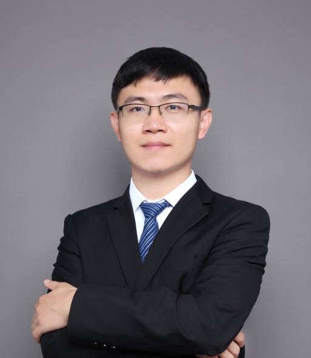
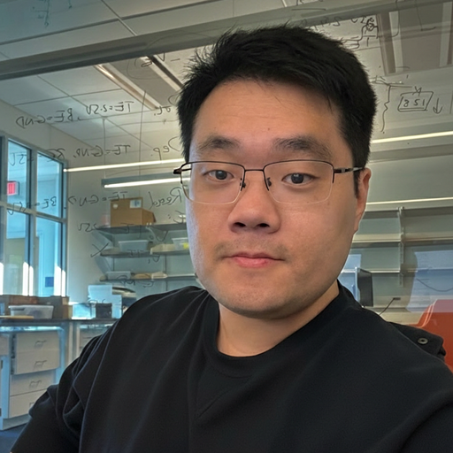
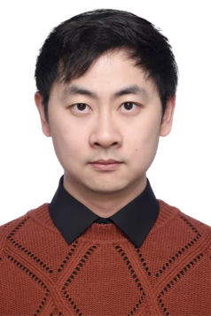

Jason Cong
University of California, Los Angeles
Workshop · Co-located with ICCAD 2026
The rapid growth of large language models (LLMs) is creating unprecedented demands on memory capacity, bandwidth, energy efficiency, and scalability. As LLM inference scales toward long-context reasoning, high-throughput serving, and edge deployment, memory access and data movement have become major system bottlenecks, exposing the limitations of conventional GPU-centric architectures. Emerging paradigms such as processing-in-memory (PIM), near-memory and near-storage computing, 3D-stacked PIM, emerging non-volatile memory (NVM)-based computing architectures, heterogeneous computing, and hardware–software co-design offer promising solutions for scalable and energy-efficient LLM inference.
This workshop brings together researchers and practitioners across architecture, hardware design, EDA, systems, and AI to discuss the future of memory-centric computing for LLM inference. Topics include 2D/3D PIM, near-memory and near-storage computing, emerging NVM-based computing architectures, heterogeneous CPU/GPU/NPU–PIM systems, memory hierarchy, data movement and KV-cache optimization, compiler and runtime support, hardware–software co-design, and EDA and design-space exploration for memory-centric AI. By fostering interactions across architecture, hardware design, memory, systems, EDA, and AI communities, the workshop aims to identify key challenges, emerging opportunities, and future research directions for next-generation memory-centric AI computing infrastructures.
University of California, Los Angeles

Peking University

Meta
Cornell University

Tsinghua Shenzhen International Graduate School
The Hong Kong University of Science and Technology
08:30–12:10 · Click a talk to view its details and speaker biography.
Opening Remarks
Coffee Break
Closing Remarks
JASON CONG is the Volgenau Chair for Engineering Excellence Professor at the UCLA Computer Science Department (and a former department chair), with joint appointment from the Electrical and Computer Engineering Department. He is the director of Center for Domain-Specific Computing (CDSC) and the director of VLSI Architecture, Synthesis, and Technology (VAST) Laboratory. Dr. Cong’s research interests include novel architectures and compilation for customizable computing, synthesis of VLSI circuits and systems, and quantum computing. He has over 600 publications in these areas, including 20 best paper awards, and 6 papers in the FPGA and Reconfigurable Computing Hall of Fame. He and his former students co-founded AutoESL, which developed the most widely used high-level synthesis tool for FPGAs (renamed to Vivado HLS and Vitis HLS after Xilinx’s acquisition). He is member of the National Academy of Engineering, the American Academy of Arts and Sciences, and a Fellow of ACM, IEEE, and the National Academy of Inventors. He is recipient of the SIA University Research Award, the EDAA Achievement Award, He was honored for the IEEE Robert N. Noyce Medal “for fundamental contributions to electronic design automation and FPGA design methods” in 2022, the Phil Kaufman Award, the highest recognition in EDA, in 2024, and the ACM Chuck Thacker Breakthrough Award in 2025 “for fundamental contributions to the design and automation of field-programmable systems and customizable computing.”
The rapid development of large language models (LLMs), e.g., ChatGPT, has brought significant technological innovations to fields such as Natural Language Processing (NLP) and multi-modal AI. However, the autoregressive decoding nature of LLMs, together with the scaling law, leads to severe memory and bandwidth bottlenecks. In this talk, we will focus on our recent works that leverage in-Flash and near-Flash computing to support state-of-the-art LLMs efficiently. We will also discuss the new opportunities and challenges associated with Flash-centric computing.
Dr. Meng Li joined the School of Integrated Circuits and the Institute for Artificial Intelligence at Peking University in 2022 as an Boya Young Fellow Assistant Professor. Prior to joining Peking University, he worked at Facebook’s Reality Labs in the United States as a Technical Lead, where he led the research on efficient AI algorithms and systems for AR glasses. He received his Ph.D. from the University of Texas at Austin in 2018 and his B.S. from Peking University in 2013. His research focuses on efficient and reliable multimodal AI acceleration hardware and systems. He has published over 130 papers in top-tier conferences and journals, with more than 10,000 citations. Additionally, he has been honored with numerous awards, including the ACM SIGDA Outstanding Young Faculty Award, Ant Group InTech Future Award, CCF Integrated Circuits Early Career Award, the European Design and Automation Association (EDAA) Outstanding Dissertation Award, etc.
Quantization has become an essential design consideration across the modern AI stack, from models and systems to hardware architectures and chips. Its role extends beyond reducing numerical precision: it increasingly shapes how computation is represented, organized, and executed. This talk examines quantization through three levels: numerical representation, hardware architecture, and computing paradigm. At the first level, the question is how to represent model values with fewer bits while preserving accuracy. At the second, the focus shifts from individual numbers to how representations and architectures can be designed together around model characteristics. At the third, quantization opens the possibility of rethinking computation itself: rather than reconstructing compressed values for conventional arithmetic, can we organize computation directly around their compressed representations? Drawing on our research across these levels, I will discuss how this progression creates new architectural opportunities for LLM inference.
Cong Guo is a Postdoctoral Researcher on the AI and Systems Co-Design team at Meta. Previously, he was a Postdoctoral Associate at Duke University, working with Professors Yiran Chen and Hai (Helen) Li. He received his Ph.D. in Computer Science from Shanghai Jiao Tong University in 2023. His research focuses on computer architecture and hardware–software co-design for efficient AI systems, particularly sparsity- and quantization-aware architectures and LLM inference. His work has received Best Paper nominations at HPCA 2026 and ASPLOS 2026, and an IEEE Micro Top Picks Honorable Mention in 2022.
The deployment of Vision-Language Models (VLMs) on edge devices is severely bottlenecked by memory bandwidth, necessitating aggressive sub-8-bit quantization. Since edge accelerators are strictly constrained by area and power, they require end-to-end quantized models. However, the extreme dynamic range gap between multi-modal tokens causes standard block formats to suffer "microscaling collapse," where a single massive outlier hijacks the shared exponent, underflowing surrounding elements and destroying attention maps. To break this bottleneck, we propose Micro-Inverted-Scaling (MiX), a novel format that mathematically inverts the microscaling paradigm: rather than grouping multiple mantissas under one shared exponent, MiX groups private, per-element exponents under a single shared mantissa. To handle asymmetric VLM outlier topologies, we introduce an adaptive dual-format (MiX-MX) inference framework. By algebraically factoring out the shared MiX mantissa, this framework maps to a custom accelerator, replacing multipliers with efficient shifters. Evaluated end-to-end on multiple VLMs, our 4.5-bit MiX formulation exhibits equivalent or superior accuracy on multi-modal benchmarks compared to NVFP4. Simultaneously, the MiX accelerator delivers a 25% improvement in area efficiency over the NVFP4 baseline and a 2.3-4.5x speedup with 1.4-2.9x energy reduction across models compared to the state-of-the-art accelerator Focus, proving the inverted-scaling datapath is physically superior for efficient VLM deployment.
Yuan Liao earned his Ph.D. in Electrical and Computer Engineering from Cornell University in 2026, following his B.S. and M.S. in Electrical Engineering from the University of Washington. His research explores the intersection of hardware-software co-design, with a specific focus on edge AI accelerator architecture and low-precision, approximate arithmetic unit microarchitectures.
Near-DRAM processing architectures (NDP) addresses the memory wall bottleneck by placing computation close to DRAM, exploiting high internal bandwidth and reducing off-chip data transfers. However, diverse NDP architectures differ in memory hierarchy, processing-unit placement, buffer design, dataflow constraints, and DRAM timing behavior, making efficient deployment difficult. This talk presents our work on simulation, compilation, and deployment optimization for NDP architectures. We first introduce UniNDP, a unified framework for architecture abstraction, instruction generation, cycle-level simulation, and design-space exploration across different NDP systems. We then discuss the challenges and opportunities of bringing NDP into the low-bit floating-point era, and present NDP compiler and data layout optimizations to improve end-to-end performance for low-bit floating-point data-based large language model inference.
Zhenhua Zhu is an Assistant Professor at Tsinghua Shenzhen International Graduate School (SIGS) and a Visiting Scholar at HKUST. He received his Ph.D. and B.S. degrees from the Department of Electronic Engineering, Tsinghua University, in 2024 and 2018, respectively. His research interests include processing-in-memory, near-memory computing, and domain-specific computer architectures. He has published more than 20 papers as the first/corresponding author, with over 2,400 citations. He has received HPCA 2025 Best Paper Honorable Mention Award and DATE 2023 Best Paper Nomination.
Large language model (LLM) inference places growing pressure on memory bandwidth and capacity. Bringing computation closer to memory reduces transfer distance. However, the amount of data moved still depends on how weights are represented and how attention is executed. This talk examines a common design principle: exploit workload structure to determine what data to move, what intermediate results to materialize, and when to fetch them.
For model weights, I will discuss how McPAL maps unstructured sparsity onto multi-chiplet HBM-PIM and how Delta-MoE exploits shared expert structure to transfer deltas while keeping a common base in GPU memory. For attention, I will discuss how SwiftCIM combines tightly coupled ReRAM storage with SRAM-based digital computation and fused dataflows to reduce intermediate traffic, and how STS reuses draft-model attention signals to select and prefetch KV data while retaining the full cache. Together, these studies illustrate how workload structure can reshape data representation and execution across the memory hierarchy. I will conclude by examining when reduced data movement translates into end-to-end gains, accounting for the added computation and coordination costs as well as model accuracy.
Jiangnan Yu is a Ph.D. candidate in Electronic and Computer Engineering at The Hong Kong University of Science and Technology (HKUST), advised by Prof. Yuan Xie in the FACT Lab. Her research focuses on efficient LLM serving and memory-centric AI systems across the software–hardware boundary, including MoE serving, KV-cache movement, and PIM/CIM acceleration. She received her M.S. and B.S. in Microelectronics from Fudan University.